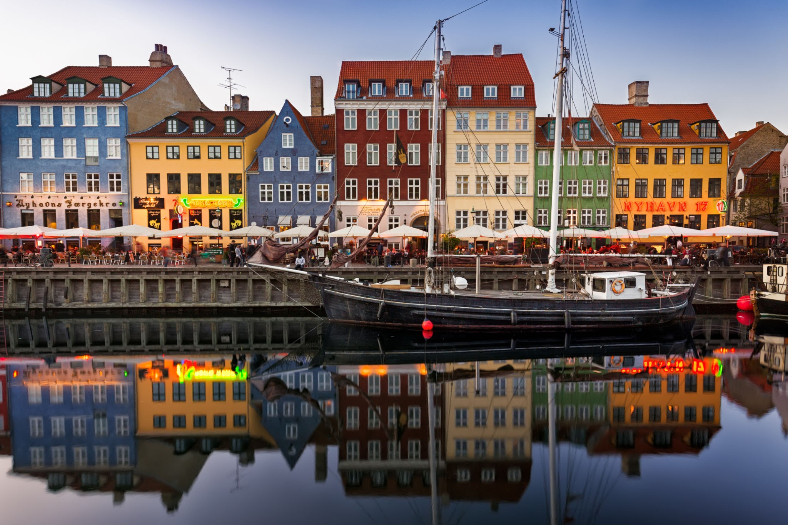
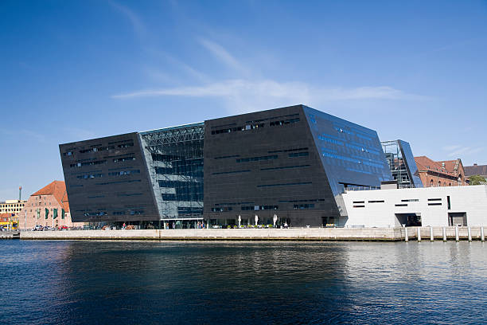
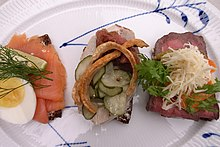
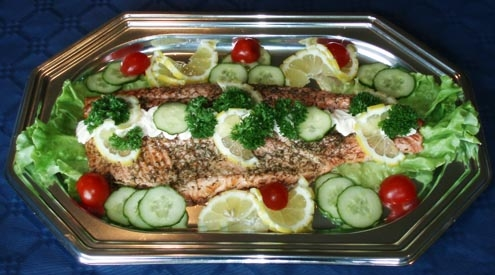

덴마크의 관광지
뉘하운(Nyhavn)

뉘하운은 덴마크의 수도인 코펜하겐에 위치한 지역으로 덴마크어로 새로운 항구를 뜻하는데
뉘하운 안에는 부두,운하가 있는데 부두로 사용되는 수로에는 수많은 요트와 관광선이 오가고
뉘하운 북쪽에는 형형색색의 건축물들이 들어서 있어 보면 감탄을 자아내는 아름다운 건물들을 볼수있다.
덴마크의 수도인 코펜하겐에서는 덴마크 왕립 도서관인 블랙다이아몬드와 로젠보르크성 코펜하겐 오페라 하우스 등 많은 관광지가 있다.
블랙다이아몬드
 로젠보르크성
로젠보르크성
 코펜하겐 오페라 하우스
코펜하겐 오페라 하우스
덴마크의 음식
덴마크에는 호밀빵 위에 훈제 연어나 삶은 새우, 신선한 채소 등을 얹은 덴마크식 오픈 샌드위치인 스뫼레브뢰드(smørrebrød)와
식초에 절인 청어에 훈제연어 그리고 육류와 치즈, 야채, 소시지 등을 얹어서 먹는 요리인 콜보르(Koldbord)가 있다.
스뫼레브뢰드(smørrebrød)
콜보르(Koldbord)
메인으로 돌아가기